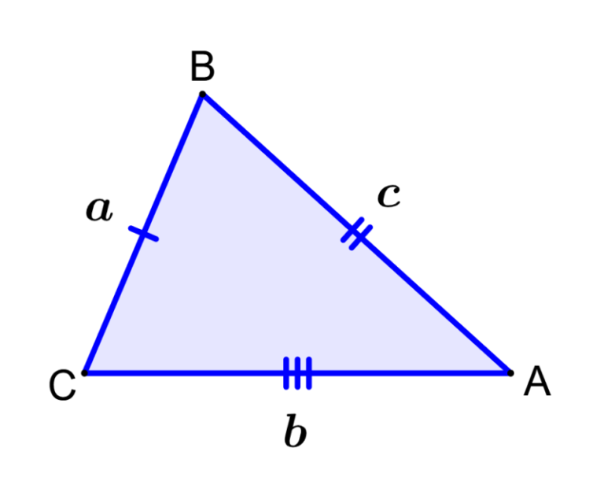

TRIANGULO ESCALENO
🔺 ¿Qué es un triángulo escaleno?
Es un triángulo que tiene los tres lados de diferente longitud y, por lo tanto, los tres ángulos internos también son distintos. No tiene simetría, ni lados ni ángulos iguales.
📐 Propiedades principales
Lados incongruentes: todos miden diferente.
Ángulos diferentes: ninguno es igual a otro, pero siempre suman 180°.
Sin eje de simetría: a diferencia del equilátero o el isósceles.
No coinciden sus centros: el ortocentro, baricentro, incentro y circuncentro están en puntos distintos.
🧮 Fórmulas útiles
Perímetro:
𝑃
=
𝑎
+
𝑏
+
𝑐
Área (si conoces base y altura):
𝐴
=
𝑏
⋅
ℎ
2
Área con los tres lados (fórmula de Herón):
𝐴
=
𝑠
(
𝑠
−
𝑎
)
(
𝑠
−
𝑏
)
(
𝑠
−
𝑐
)
Donde
𝑠
=
𝑎
+
𝑏
+
𝑐
2
es el semiperímetro.
🔍 Tipos de triángulo escaleno según sus ángulos
Escaleno acutángulo: todos los ángulos son menores de 90°.
Escaleno rectángulo: uno de los ángulos es de 90°.
Escaleno obtusángulo: uno de los ángulos es mayor de 90°.
🧠 Curiosidades
Es el único tipo de triángulo que no tiene ningún lado ni ángulo repetido.
Se usa mucho en arquitectura y diseño por su estabilidad estructural.
Aunque parezca desordenado, tiene reglas matemáticas muy precisas.
